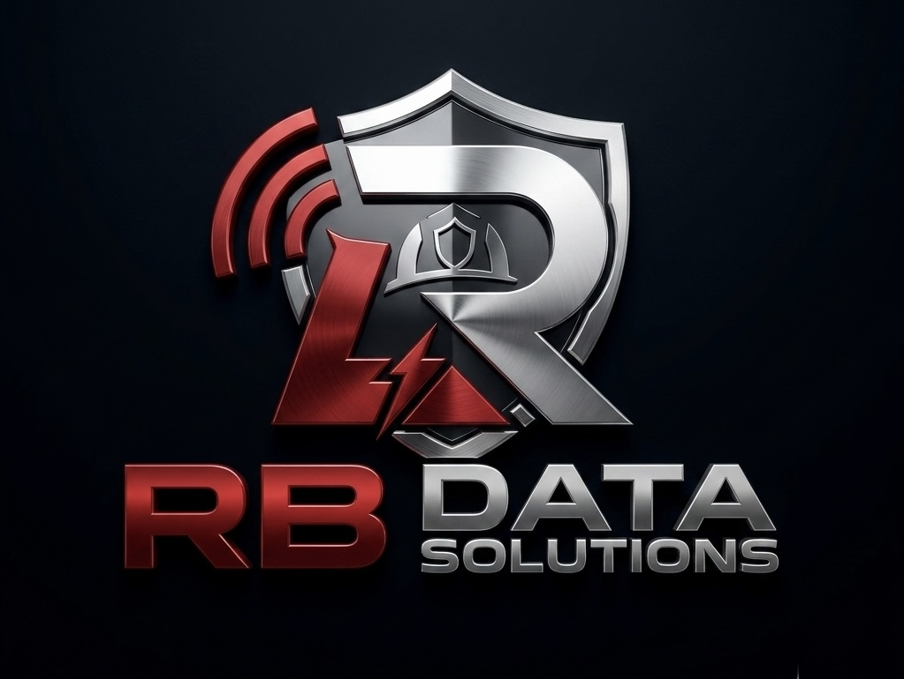
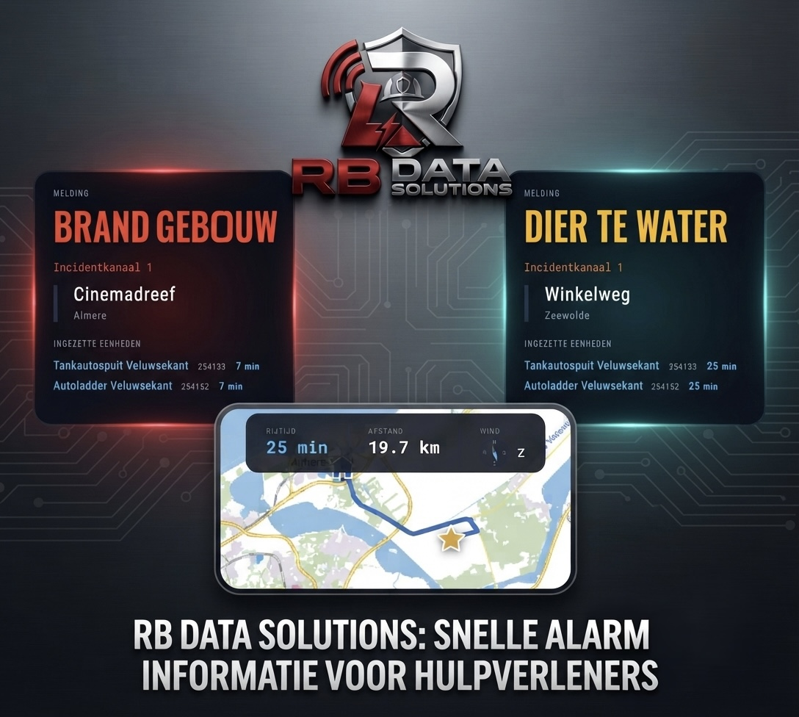

Zodra de pieper gaat, staat de melding op de tv in de kazerne. Type incident, volledig adres met wijk, en per voertuig de rijtijd naar de plaats incident — gesorteerd op wie er als eerste is.
De pieper geeft je een regel tekst. Het scherm geeft dezelfde melding, maar dan met de locatie op de kaart, de wijk erbij, en per voertuig een rijtijd. Alles wat je normaal alsnog moet opzoeken of wil weten, staat er al voordat je daadwerkelijk uitrukt.
De post heeft een eigen P2000-ontvanger. Die vangt de alarmering rechtstreeks op, zonder tussenpartij en zonder vertraging van een website of app.
Prioriteit, type incident en de locatie — met wijk en stadsdeel erbij, zoals het in de omgeving genoemd wordt. Ook als de melding zelf alleen een straatnaam bevat.
De route wordt berekend met een profiel voor voorrangsvoertuigen. Waar de regio busbanen vrijgeeft, worden die meegenomen. Per eenheid een rijtijd en een afstand, niet één gemiddelde voor de hele uitruk. De rijtijd is een indicatie: verkeer, weer en de route die je zelf kiest bepalen wat het werkelijk wordt.
De gealarmeerde eenheden staan gesorteerd op rijtijd: wie het eerst ter plaatse is, staat bovenaan. In één blik weet je wie je onderweg treft en wanneer.
Klok, weerbericht, de kazernetaken van vandaag en welke ploeg dienst heeft. Het scherm is de rest van de dag gewoon nuttig om naar te kijken.

Werkt op elke tv, monitor of tablet met een browser
Je krijgt een ontvanger die de alarmering rechtstreeks oppikt, kant-en-klaar ingesteld. Geen omweg via een externe dienst die er even uit kan liggen. Een werkende internetverbinding op de post is wel nodig.
Straat, wijk en stadsdeel, voor heel Nederland.
Een rijtijd en afstand per voertuig, gesorteerd op wie er als eerste aankomt. Busbanen worden meegerekend waar de regio dat toestaat.
Alle gealarmeerde voertuigen op een rij, met hun nummer. Je ziet direct of het bij jouw post blijft of dat er meer op komt.
Een tv met een browser, of een tablet. De ontvanger regelt de rest, dus er komt geen software op een pc in de kazerne.
Weer, kazernetaken, ploegrotatie en het aantal meldingen per dienst. Je bepaalt zelf wat er tussen de meldingen door staat.
Het scherm is gebouwd voor de praktijk op de kazerne. Het schaalt mee van één post naar een hele regio, maar het blijft hetzelfde scherm.
Je rijdt op de melding naar de kazerne en wilt bij binnenkomst meteen zien waar het is, wie er al gealarmeerd is en of je nog nodig bent.
Je draait een 24-uursdienst. Tussen de meldingen door moet het scherm nuttig zijn, en bij een uitruk moet het onmiddellijk het goede laten zien.
Je wilt niet tien losse installaties met tien verschillende versies, en al helemaal geen extra systeem dat iemand moet gaan bijhouden.
Er is één scherm en dat draait op elke post die meedoet. Welke kazerne je bent, zit in het adres dat je krijgt — daar haalt het scherm zijn capcodes, voertuignummers, taken en instellingen op.
Elke post is anders: aantal schermen, wel of geen eigen ontvanger, één kazerne of een hele regio. Daarom geen prijslijst, maar een offerte die bij je situatie past.
Wij richten een scherm in met de capcodes en voertuignummers van jouw kazerne. Hang het een paar weken in de remise en kijk of de ploeg het gebruikt. Zo niet, dan stopt het daar.
Post aanmeldenStuur een bericht met de naam van je post en je regio. Je krijgt een werkende demo-omgeving met de voertuignummers van je eigen kazerne erin.
Of gewoon mailen: info@rbdatasolutions.nl